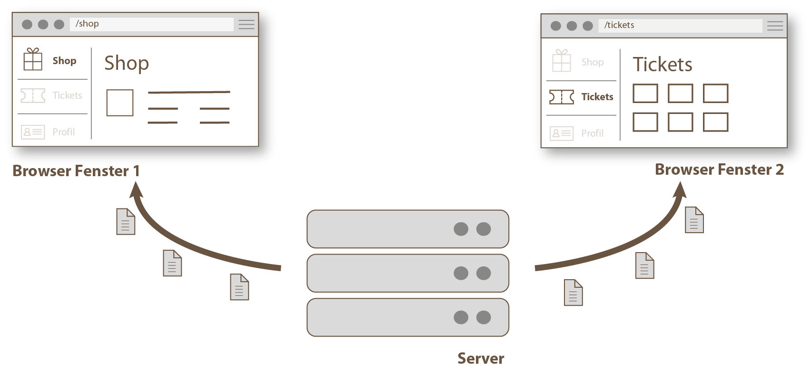
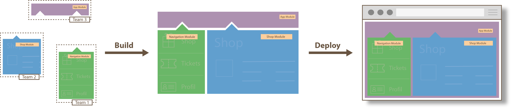
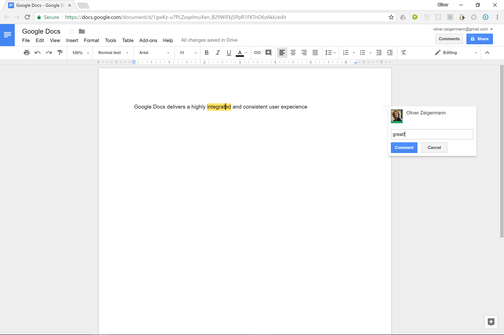
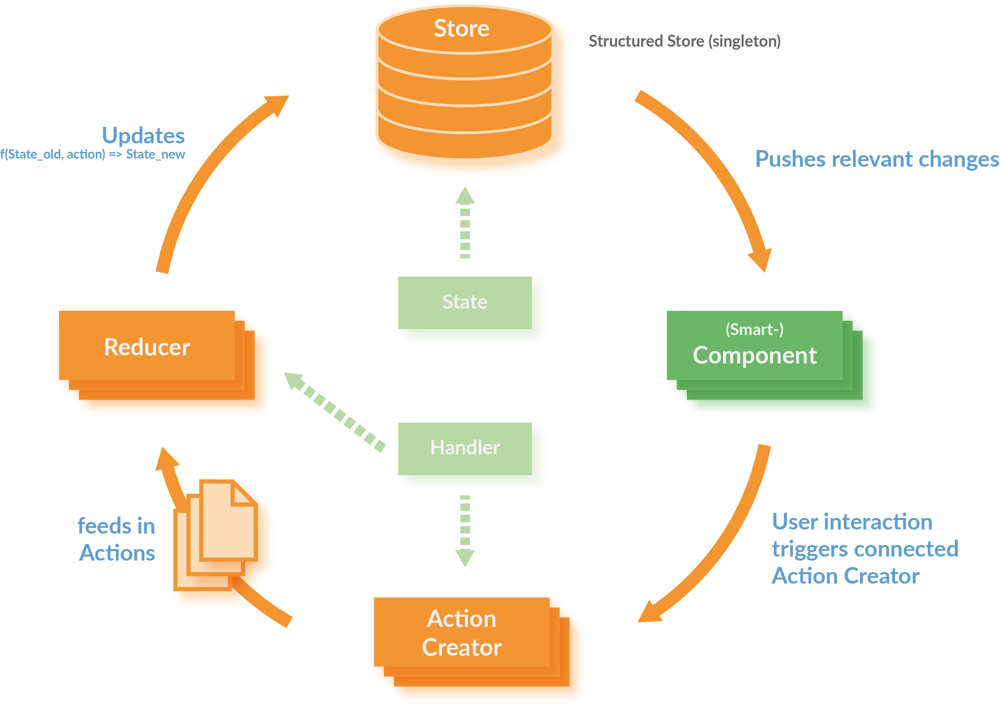
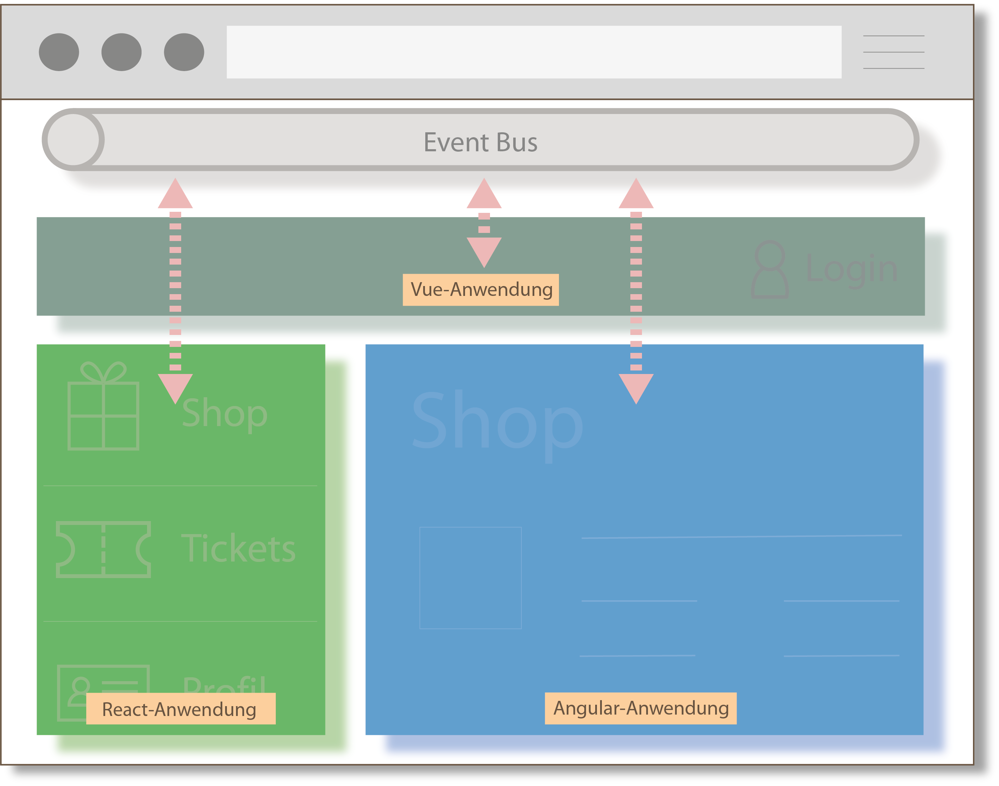

Micro Frontends:
JavaScript Integration Patterns
Folien: http://djcordhose.github.io/architecture/2018_s.html
Teil 1
Im Spannungsfeld der Anforderungen
Nutzer möchten eine konsistente, gut bedienbare UI erleben

Axiom I
Beste UI / UX kann nur durch Single Page Applications (SPA), Mobile oder Desktop App erreicht werden
Logik muss nahe an Interaktion und Daten müssen nahe an Logik liegen
SPA
verschieben daher Hauptteile eurer Anwendung in den Client

- Server ist hauptsächlich Daten-Schnittstelle (JSON/REST API)
- Server kann Business Logic enthalten, diese kann aber komplett im Client liegen
- erlaubt Offline-Betrieb für SPAs (u.a. über Service Workers)
Problem: Größere Anwendungen können nicht von einem einzigen Team entwickelt werden

Axiom II
Wartbarkeit und Skalierung im größeren Kontext ist nur durch Modularisierung erreichbar
Moderne Frontends...
- sollen aus einzelnen Modulen zusammensetzbar sein
- müssen zu modernen Backend-Architekturen passen
- sollen einzeln zu deployen sein
- sollen pro Modul am besten die freie Wahl von Technologie erlauben
Das passende Buzzword dazu ist Micro Frontends ( https://www.thoughtworks.com/radar/techniques/micro-frontends )
Spannung zwischen Axiom I und II
Wenn man die Module für Wartbarkeit entkoppelt (Micro Frontends) muss man sie für beste UI/UX aus einem Guss wieder koppeln
Das geht das nicht ohne Kompromisse
- Wo will man Abstriche machen?
- Erfahrung des Nutzers?
- Entwicklungsprozess?
https://twitter.com/missingcloudltd/status/826203153934729218
Es gibt keinen universell passenden Architektur-Ansatz
Daher...
Man muss die Anforderungen kennen und die müssen passen.
- Oliver Zeigermann
Typische Anforderungen
an Web-Anwendungen
Anforderungen
UX, Konsistenz
- Gleichzeitige, synchronisierte Darstellung mehrerer Module (keine Inkonsistenzen)
- Schnelle erste Darstellung
- Unverzögerte Reaktion (Bei Eingaben, Drag'n'Drop, Ansicht wechseln, ...)
- Offline-Fähigkeit
Anforderungen
(technische) Risiko-Minimierung
- schrittweises Ausrollen von technischen Innovationen
- schrittweise Migration, kein Big Bang
- Feature-Stau
Anforderungen
Skalierbarkeit der Entwicklung / Entwicklungsgeschwindigkeit
- Anzahl der Teams
- Freie Wahl des Frameworks
- Update der Bibliotheken
- Eignung für vertikale Architektur
- Gemeinsame Bibliothek, Wiederverwendung
- Freiheitsgrad der Modulgröße
- Migrationspfad von klassischer Web-App
Teil 2
Lösungsansätze
Wir nehmen Frontend-Architektur nicht für voll
Zitate
- Frontend-Architektur: Ich dachte sowas gibt es gar nicht
- Das Frontend kloppen wir am Ende einfach irgendwie drauf
- Architektur für ein bisschen CSS-Pixel-Geschubse?
Architektur-Ansätze
für Micro Frontends
Integration einzelner Micro Frontends (Module)...
-
über "normale" HTML Links

-
(Kudos an @axelfontaine für den Namen)zur Build-Zeit

-
im Browser

Ansatz 1
Links
Eigenständige Anwendungen über Links verbinden
Integration mehrerer Anwendungen über Links, die eine neue Anwendung öffnen und/oder die alte ersetzen
- jedes Modul ist eine eigene (SPA) Anwendung
- erlaubt Vertikalen wie eine klassische Web-App
- Module teilen keinen Zustand, aktualisieren einander nicht
Variante: App Shell hat JavaScript Rahmen, weniger flexibel, kann aber u.a. Zustand halten
Eigenständige Anwendungen in eigenständiger Darstellung

Jede Anwendung wird beim Öffnen komplett neu aufgebaut
Prominentes Beispiel: Outlook Online

UX-Schwächen, unterschiedliche Technologien, jede App wird anders dargestellt
Wechsel der App dauert (Service Workers können die Zeit ab 2. Aufruf vermindern)
Wie stecken wir wieder zusammen?
Kommunikation zwischen getrennten Anwendungen
Parameter-Übergabe
- Cookies: gut für Session Id, Authentication Tokens
- URL Parameter: begrenzte Länge, nicht alles möchte man in der URL haben, Bookmark und verschickbarer Link möglich
- Local Storage: Key/Value, bleibt bestehen bis zur expliziten Löschung
- Session Storage: Key/Value, nur gültig für aktuellen Tab
Alle Ansätze halten auch bei Reload den Zustand und funktionieren problemlos mit Back-Button
Real-Time Kommunikation bei mehreren offenen Tabs/Windows
- Long Polling: Erfordert Server Verbindung, kann viel Server Resourcen fressen
- Web Sockets: Erfordert Server Verbindung, geht immer noch nicht überall
- PWA Push: Erfordert Service Worker und Server
- Local Storage: Ohne Server wenn in demselben Browser
Outlook Online verwendet alle drei Server basierten Techniken
Ansatz 2
Majestic Modular Monoliths
Single Page Application

Single Page Application
Eine einzelne Single Page Application mit statischem Build
- Jedes Team entwickelt eigenes Modul
- Module können per (In-House-) npm Registry veröffentlicht und ausgetauscht werden
- Statischer Build integriert komplette Anwendung
- Deployment als Monolith
Single Page Application
- Zur Laufzeit Lazy-Loading möglich
- Für schnelle erste Seitendarstellung
- Anwendung nutzt ein Framework mit einer Version
- Gemeinsame allgemeine Bibliothek sinnvoll (Buttons, Menüs, Formulare etc.)
- Export einzelner spezieller Komponenten aus Teams möglich ("Fassaden")
Prominentes Beispiel: Google Docs
Keine systematischen UX Probleme
Gemeinsame Anwendungen in gemeinsamer Darstellung
Architektur-Muster
Smart and Dumb Components
Heißt auch Mediator Pattern
Smart Components / Container
- Verwalten Teilzustand der Anwendung
- Reichen Teile des Zustands als unveränderliche Daten an Unterkomponente weiter
- Enthalten UI Logik, die sie als Callbacks an ihre Unterkomponenten weiter geben können
- Meist spezifisch für eine Domäne
- Nicht außerhalb der Domäne wiederverwendbar
Dumb / Presentational Components
- Managen höchstens transienten State
- enthalten keine Logik
- Unterkomponente sind meist selbst nur Dumb Components (es gibt Ausnahmen)
- haben kein Wissen oder Abhängigkeit zu Oberkomponenten
- wiederverwendbar
Copyright 2017, Nils Hartmann
Smart Component
@Component({
template: `<sub [greeting]={{greeting}} (onSend)="sent($event)">`
})
export class AppComponent {
// component state
private greeting: string = 'Hiho';
// dependency injection
constructor(private greetingService: GreetingService) {
}
// "Business Logic" delegated to service
sent(greeting) {
this.greeting = this.greetingService.greetBack(greeting);
}
}
ng generate service greeting
Dumb Component
@Component({
selector: 'sub',
template: `
{{greeting}}, World
`,
})
export class SubComponent {
@Input() greeting: string;
// rxjs observer
@Output() onSend = new EventEmitter();
// no business logic, just event emitting
send() {
this.onSend.emit(this.greeting);
}
}
Grenzen von Smart / Dumb
Besonders bei wachsenden und langlebigen Anwendungen
- Tendenz zu "Gottkomponenten": Zustand und Logik wandern langsam nach oben in eine einzige Komponente
- Vermischung von Framework und UI-Logik (erschwert Austausch das Frameworks)
- Verteilter, veränderlicher Zustand erschwert Wartbarkeit
- Zustand oft nicht klar zuzuordnen
- In welchem Zustand ist die Anwendung?
- Architektur immer noch unklar
- Wo ist Nebenläufigkeit erlaubt?
- Wie läuft die Initialisierungsphase
- Wie testet man die Business Logik?
Wie stecken wir wieder zusammen?
Externes Zustandsmanagement
- Zustand, der über viele Komponenten verteilt ist, macht Programme kompliziert
- Gemeinsame Nutzung von Zustand in unterschiedlichen Komponenten-Hierarchien ist schwierig
- Zustandsmanagement und UI-Handler werden aus UI-Komponenten extrahiert
Über Komponenten verteilter Zustand

Redux
Redux ist unabhängig vom UI-Framework
Implementierungen existieren für alle wichtigen UI-Frameworks
- React: http://redux.js.org/docs/basics/UsageWithReact.html
- Angular: https://github.com/ngrx/store
- Vue: https://github.com/vuejs/vuex
- Web Components (Polymer): Empfohlene Implementierung des Global Mediator Pattern, https://twitter.com/DJCordhose/status/899943415353311232 https://tur-nr.github.io/polymer-redux/
Ansatz 3
Micro Components
Zusammensetzen der Anwendung im Browser
- Anwendung ist in logische Module aufgeteilt, die als ganze Anwendung zusammen laufen
- Integration zur Laufzeit
- Frameworks frei wählbar pro Modul
- Artefakt der Gesamtanwendung wahrscheinlich groß
Eigenständige Anwendungen in gemeinsamer Darstellung

Jede Anwendung kann komplett eigenen Stack haben
Kommunikation über EventBus, Local Storage, direkte Listener oder gemeinsamer Zustand
Prominentes Beispiel: Spotify

https://www.quora.com/What-is-the-technology-stack-behind-the-Spotify-web-client/answer/Andreas-Blixt
https://www.quora.com/How-are-Spotify-Web-Player-components-developed
https://www.reddit.com/r/reactjs/comments/5sgkro/til_spotify_is_using_reactredux_in_their_web_app/
überraschende UX Schwächen, Apps nur gleichzeitig dargestellt, aber nicht komplett integriert
Beispiel: Technologie-Migration
Angular (Übersicht) nach React (Spielfeld und Ticker), Kommunikation über Long Polling

Wie stecken wir wieder zusammen?
Module im Browser zusammensetzen
- HTML script Tags und unterschiedliche Mount Points (wie bei Sport1)
- Web Components
- iFrames
Achtung: Auf Ladezeiten achten, wenn jedes Modul sein eigenes Framework mitbringt
Beispiel: Web Component ummantelt Modul
Laden als JavaScript ES6 Modul, HTMLImport ist tot
import 'my-element';
<my-element greeting="Hello"></my-element>
class MyElement extends HTMLElement {
constructor() {
super();
this.attachShadow({ mode: 'closed' });
// ...
}
connectedCallback() {
// render Angular / React component
}
}
customElements.define('my-element', MyElement);
Achtung! Keine komplette Isolation, funktioniert in der Praxis nicht gut mit beliebigem Framework
iFrame
Beispiel: http://djcordhose.github.io/architecture/code/integration/
Lädt komplett isolierte Anwendung
<iframe height="300" width="500"
src="http://djcordhose.github.io/architecture/code/integration/iframe.html"
sandbox="allow-scripts allow-top-navigation allow-same-origin"></iframe>
- Kein geteiltes Styling
- Einbetten mit richtiger Größe ein Albtraum
- Kommunikation mit Außenwelt lästig
Globaler Event Bus
Komponenten publizieren und können sich auf Events registrieren
Bedient Anforderungen: Gleichzeitige, synchronisierte Darstellung mehrerer Module
Herausforderung: Zustand über Events synchron halten
Beispiel: PostalJS
Alternative: Local Storage
Bewertung
Ansätze sind nicht wechselseitig exklusiv
- Seite einer Link-App kann eine Micro Components App sein
- Teil einer Micro Components kann ein Majestic Modular Monolith sein
- Seite einer Link-App kann ein Majestic Modular Monolith sein (Google Drive vs Google Docs)
Urteil
-
Links:
bester Entwicklungsprozess
- beste Story für Modularisierung, Migration, Deployment
- schwächste Integration von UI/UX
-
Majestic Modular Monoliths:
beste Erfahrung für den Nutzer
- schwächste Story für unabhängige Teams
- bestes und konsistentestes UX/UI, starke Stories für State Management und Universal Web Apps
-
Micro Components:
Kompromiss
- Technik für Integration im Browser nicht wirklich überzeugend
- UX/UI gut für Intranet oder Desktop